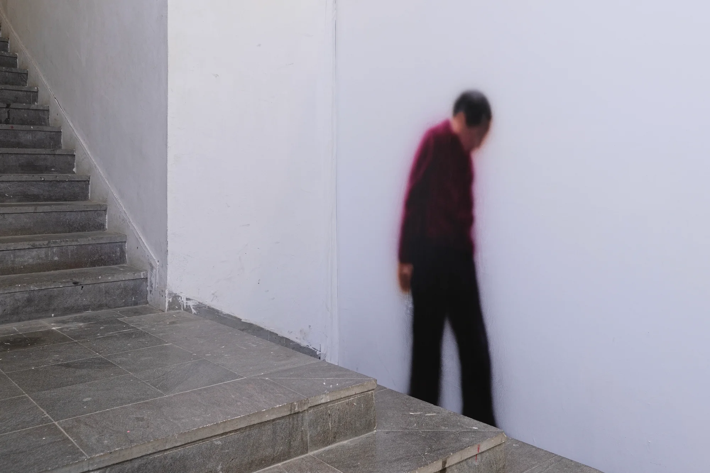
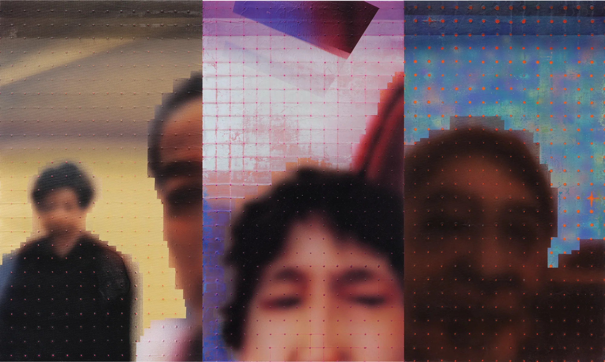
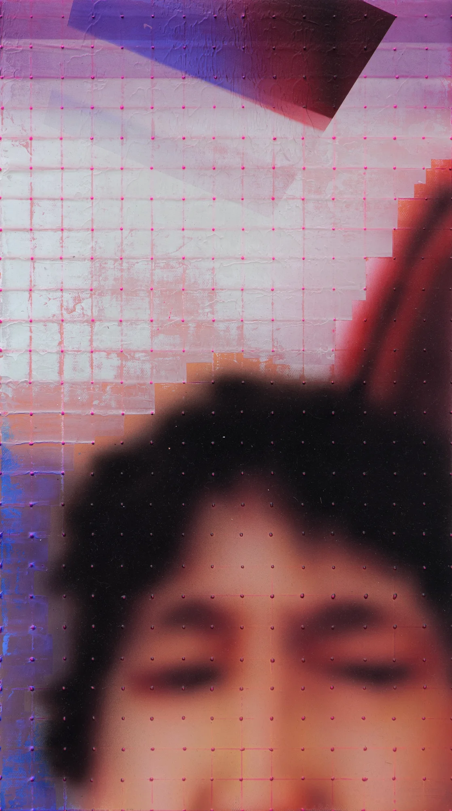
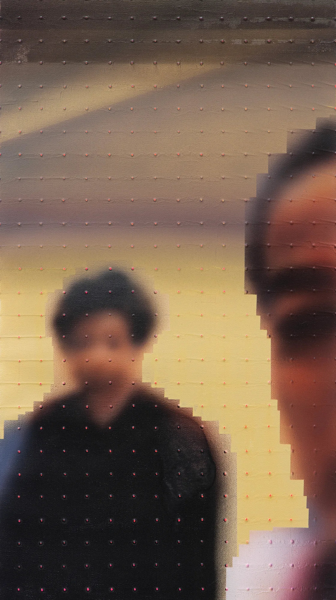
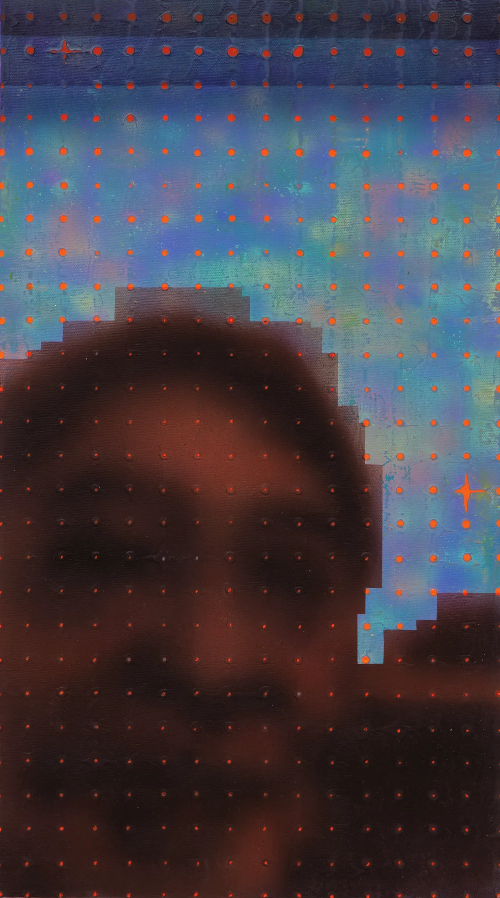
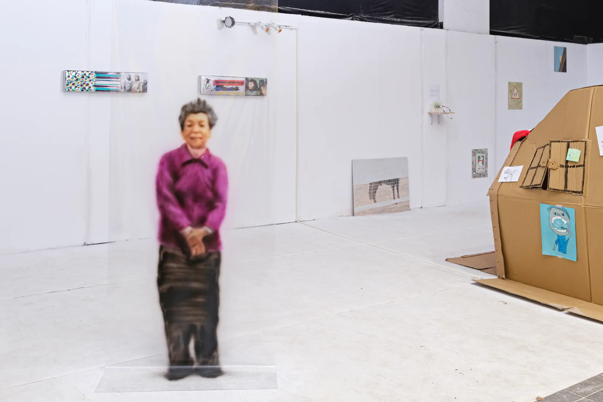
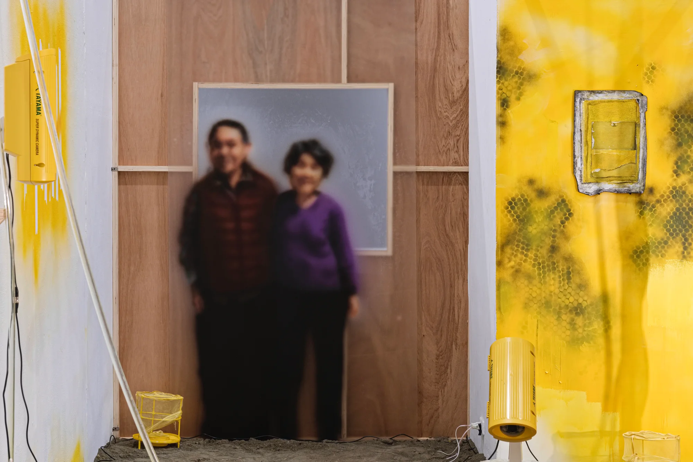
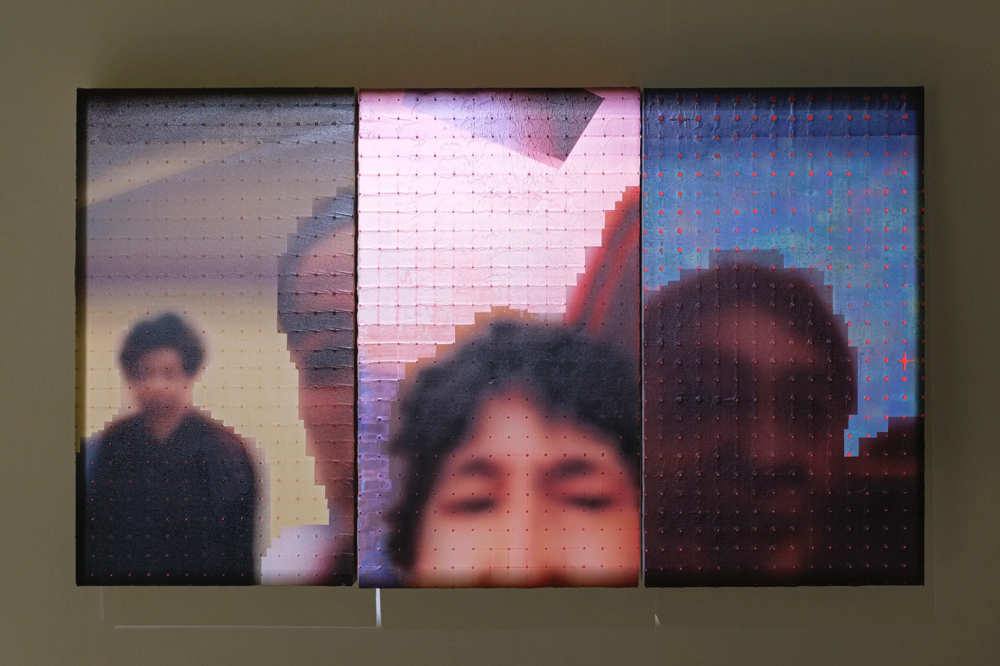

茫茫
bông-bông
2023

這組作品是我揉和了對於親情的感受以及當代的視覺經驗，將與家人視訊的影像繪製後排列展示，集結成一幅代表疫情年代的家庭合照，試圖將我在視訊中所體驗到的「模糊與清晰」轉化為不同繪畫筆觸的表現形式，透過影像的再繪製召喚個人經驗，開放觀眾帶入自己對於焦距與距離的解讀。我也在作品周圍畫了等比例人像畫，以低解析且模糊不清的方式將長輩的形象繪製在空間中，意圖讓這個影像的圖層存在於現實及攝影之間的夾層，一方面傾訴我的念想，同時也想讓這些存在於觀眾眼角餘光間的人物，能在一眼之瞬親臨現場，也許在不同觀者的眼中能夠成為他們想念卻無法觸及的人。整體而言，想藉由這樣的形式訴說那份說不出口的情感，讓永不停滯的時光在這裡暫緩一下也好。
Read in English
This series of works represents the amalgamation of my sentiments towards family and contemporary visual experiences. I paint images captured during video calls with my family, arranging and displaying them as a composite family portrait that encapsulates the era of the pandemic. Seeking to transform the "blurriness and clarity" experienced in video calls into different forms of painting strokes, I use the re-rendered images to evoke personal experiences, inviting viewers to interpret their own perspectives on focus and distance.
Around the main images, I paint proportional portraits of family members in a low-resolution and deliberately blurred style. The intention is to create a layering effect between the images' existence in both reality and photography. This interplay not only serves as an expression of my thoughts but also aims to make these figures, existing in the peripheral vision of the viewer, momentarily present in the space. Perhaps, in the eyes of different viewers, these figures become the individuals they long for but cannot physically reach. Overall, through this artistic form, I aim to articulate the unspoken emotions, allowing the ceaseless passage of time to momentarily pause in this space.
現場與細節
VIEWS & DETAILS





